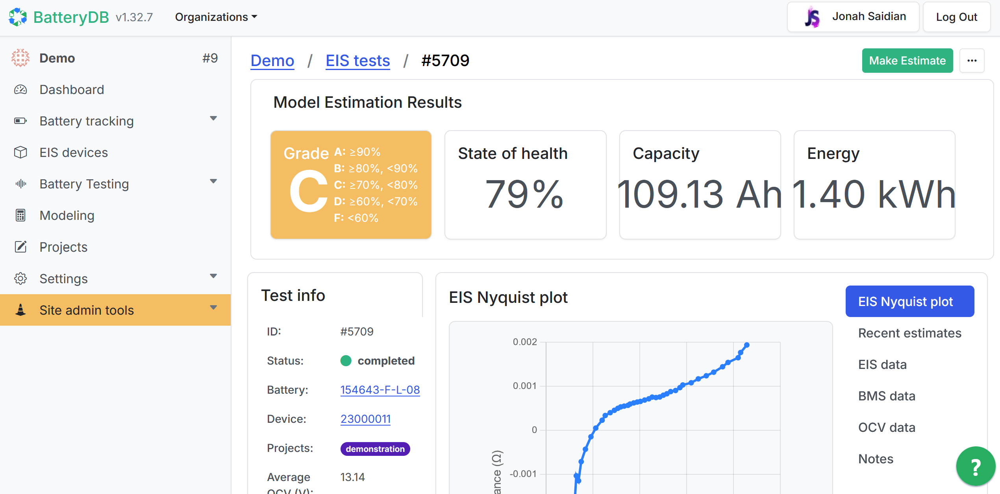

A comprehensive cloud-based platform for battery testing, analysis, and grading, featuring advanced machine learning capabilities and real-time data processing.
BatteryDB is an enterprise-grade solution that revolutionizes battery testing and analysis through cloud computing and machine learning. The platform processes vast amounts of battery test data in real-time, providing instant insights and automated grading capabilities for battery manufacturers and researchers.
Successfully developed and deployed a scalable, enterprise-grade battery analysis platform processing millions of data points daily with 99.9% reliability.